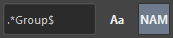
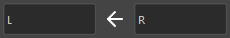

A tool to assist with selection and name substitution in Maya.
This tool assists with operations such as selecting nodes in the scene and substituting names.
Main features include:
Launch the tool from the dedicated menu or with the following command. The launched tool will dock at the bottom of the shelf.
import faketools.tools.selecter
faketools.tools.selecter.show_ui()
Filter selected nodes by text.
Holding down the Ctrl key while selecting will deselect the matching nodes.
Example: Select nodes containing the text "Group"

If a regular expression string is used, it will be filtered as a regular expression.
Example: Select nodes containing the text "Group" at the end of the node name

Pressing the Aa button will filter without case sensitivity.

Filter selected nodes by node type.
Holding down the Ctrl key while selecting will deselect the matching nodes.

Select the parent, child, and sibling nodes of the selected nodes.

All selections can use modifier keys just like in Maya's view.
Select nodes by substituting the names of the selected nodes from left to right.

All selections can use modifier keys just like in Maya's view.
※ This feature can be customized by setting LEFT_TO_RIGHT and RIGHT_TO_LEFT in settings.json.
Select, rename, duplicate, and duplicate original shapes of nodes by substituting names.

The command is executed by substituting the names with the strings entered in each text box. Pressing the → button will swap the direction of substitution.

Rename the selected nodes.

@ will be converted to alphabets. They will be assigned sequentially from A based on the selection order. To change the initial string, modify the string in the @ field.# will be converted to numbers. They will be assigned sequentially from 1 based on the selection order. To change the initial number, modify the string in the # field.~ will be replaced with the names of the selected nodes.Example:
| Selected Nodes | Field | Rename Result |
|---|---|---|
| Any | fake@ | fakeA, fakeB, fakeC, ... |
| Any | fake# | fake1, fake2, fake3, ... |
| Any | ~_fake | Any_fake |
Use the special features by pressing the respective buttons.